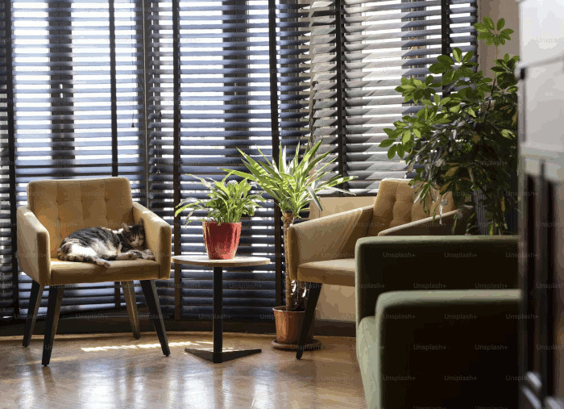

Inspiration for the Mid-Century style
Sitting Area
Notice the square shaped chairs (especially the arms) and open legs on all the furniture. Also note the contrast between the light or bold colored furniture and the black accents on furniture, blinds, etc.

Kitchen
Notice the balance of light neutrals and medium wood tones that contrast with the blacks, and the modern appliances, lighting fixtures, etc.

Living Room & Fireplace
Notice the large windows, very clean and straight lines, and wood accents.
Exterior
Notice the large windows, open feel, and straight lines used throughout the architecture.
Bedroom
Notice the light colored paint, bedding, rug, etc. compared to the dark nightstands, lamps, and headboard. Also take note of how most of these dark elements are closer to the floor, and create a focal point in the room.
Outdoor Patio
Notice the neutral colors but with high contrast, and the large windows.

Living Room
Notice the large windows and high contrast. While they didn't use the classic black, and introduced more bold colors than some other examples, this photo shows how much variation and fun the style can introduce. Remember, not everything has to be neutral to be modern!